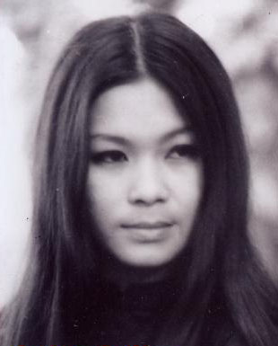

Ở đâu và bao giờ cũng vậy, mỗi khi nghe tiếng anh nói cười, tôi đều cảm thấy yên tâm vô cùng... "Ô, Mai hả, có qua không?" Tôi cười..." Em cũng chưa biết tính sao, để xem đã nghe anh...". Miệng thì nói vậy, sáng hôm sau tôi đã có mặt ở phi trường. Chuyến bay cất cánh lúc 7 giờ sáng.
Trời lúc đó đã sang tháng 4. Tuyết vẫn phủ trắng xoá hai bên đường từ phi trường về nhà. Hình như cái gì vào lúc sắp hết cũng mạnh mẽ thêm, như ánh lửa, như cơn nắng, như mưa dông, như tình yêu - rồi mới chịu dứt hẳn, mới chịu buông tay chấp nhận. Cũng may tôi chuẩn bị áo lạnh đầy đủ, vậy mà cũng không tránh khỏi những xuýt xoa. Tôi đi thẳng lên lầu, rón rén bước vào phòng. Anh đang ngủ. Giấc ngủ buổi chiều. Khuôn mặt gầy, xương xương góc cạnh. Cái kính gọng vân vân như đồi mồi để trên bàn đầu giường. Anh gầy quá. Tôi bước lại gần anh hơn. Rất nhẹ nhàng tôi cúi xuống, nhìn sát mặt anh. Tôi không nghe hơi thở của chính mình. Tự dưng tôi muốn hôn lên trán anh. tôi không làm thế. tôi muốn nắm lấy bàn tay rất gầy có những ngón thon dài, đặt trên ngực. Tôi không làm thế. Và cũng rất nhẹ nhàng như khi bước vào, tôi ra ngoài phòng khách ngồi nói chuyện với Tâm, Tịnh và anh Thích.
Anh bước ra, tay vuốt tóc, tay chỉ tôi... “A, tới rồi à. Tới hồi nào vậy..." Giọng anh không hề có chút ngạc nhiên, làm như cái chuyện tôi đến, anh đã biết. Ngày xưa cũng thế. Chúng tôi ôm choàng lấy nhau, và đến lúc này tôi mới cảm nhận rằng chúng tôi thực sự có nhau. Không phải trong một giấc mơ kéo dài 17 năm. Tất cả chúng tôi ngồi bên nhau. Hình như chưa bao giờ chúng tôi nói với nhau nhiều dù ở bất cứ một đề tài, một lãnh vực nào. Hình như chúng tôi có cách nói mà chỉ hai chúng tôi hiểu được. Một cách nói ở bốn con mắt im lặng. Cũng có lúc, cả hai chúng tôi bị lôi cuốn vào câu chuyện vui của mọi người. Nhưng đó là những điều hoàn toàn không dính líu, liên quan đến những điều thực sự chúng tôi muốn nói với nhau. Tất cả những điều cần nói, chính là những điều không bao giờ nói ra bằng lời.
Buổi chiều tuyết rơi kín mặt hồ, chúng tôi đi bên cạnh hàng cây đầy hoa. Hoa tuyết. Nói chuyện bâng quơ, không gì rõ ràng được đặt ra, không có gì thắc mắc, không có khoảng cách 17 năm để phải ngỡ ngàng. Tôi ngỡ như vừa từ Sài Gòn ra Huế thăm anh. Anh từ Huế vào Sài Gòn.
Chúng tôi uống cà phê tại La Pagode. Tôi tưởng sẽ có nhiều điều để hai anh em nói với nhau. Nhưng cả hai đều không nói gì cả.
Bao nhiêu ngày tháng đã đi qua giữa chúng tôi. Anh vẫn không bao giờ thay đổi. Tôi cũng thế. Cả hai không có những thắc mắc về đời sống của nhau bởi 30 năm trước đã không hỏi thì 30 năm sau cũng không hỏi... Tôi quý những giây phút ở bên anh và tôi nghĩ anh sẽ nói với tôi điều cần nói, nếu có. Anh im lặng cũng có thể vì những điều anh nghĩ, anh muốn, không còn cần thiết để phải nói ra.
Trong một căn phòng, không phải bên cạnh sông Hương mà ở ngay giữa lòng thành phố Montréal. Bên ngoài tuyết rơi, chúng tôi ngồi với nhau, những người bạn cũ. Hát lại những bài hát ngày xưa. Hoặc những tình ca mới. Mỗi người một ly rượu, khói thuốc mù mịt, mỗi người ngồi sát nhau trên chiếc thảm, trước lò sưởi. .. Không ai cảm thấy lạnh. Không chút lạnh lẽo nào giữa chúng tôi trong căn phòng nhỏ... Anh hát đi. Không, Mai hát đi. Giang hát đi.
Mai ngâm thơ đi. .. “Mà sao giấc ngủ không dài. Mà đêm không ngắn mà trời cứ mưa. Ở đây tôi sống như thừa. Cố đem men rượu tẩm vừa lòng nhau”. (Nguyễn Bính).
Cũng mùa đông, một đêm nào đó, 1974 ở nhà anh chị Lễ, ở Huế. Ngôi biệt thự bên cạnh sông Hương. Ngoài trời cũng tối và lạnh như đêm nay. Mùa đông ở Huế. Chúng tôi cùng ngồi bên nhau như hôm nay. Lúc đó, tôi vừa 30 tuổi. Tóc vẫn còn xanh. Lòng còn tha thiết yêu đời sống. Một buổi sáng tôi bỗng thấy mặt trời lên cùng tôi và biển cả. Nước mắt tôi tuôn như mưa. Tôi nhớ mùa đông ở Huế. Chính Huế cho tôi hơi thở.
Bây giờ là cuối đông. Những bông tuyết bay trong chiều, đậu trên những cành cây trụi lá, gầy guộc. Chúng tôi đi bên nhau. Tia nắng dịu dàng đậu trên những bông hoa nhỏ bé, lấp lánh tấm thảm dầy trắng tinh, chỉ có vết chân bé nhỏ của những chú sóc nghịch ngợm chạy tới ăn những hạt bắp rang nổ bung mà anh liệng ra để dụ chúng lại gần. Anh cười vui, ánh mắt long lanh theo dõi. Tôi ít thấy anh cười mà cũng không bao giờ thấy anh tỏ vẻ buồn bã.
Chúng tôi tìm đến một thân cây lớn, một nửa ngập dưới tuyết, ngồi nghỉ chân. Tuyết vẫn rơi. Chỉ có hai chúng tôi giữa một vùng trắng mênh mông yên lặng. Chẳng lẽ không có gì để nói, không còn gì đáng nói sau mười mấy năm vắng nhau? Có chứ. Anh đã nói, không phải với riêng tôi, mà ở những bài hát. Tôi đã nghe và hiểu từ đó... “Có đường xa mà gió chiều quạnh quẽ. Có hồn ai đang nhè nhẹ sầu lên... Tôi là ai mà còn khi dấu lệ. Tôi là ai mà còn trần gian thế. Tôi là ai. Là ai. Là ai mà yêu quá đời này... Con diều bay mà linh hồn lạnh lẽo. Con diều rơi cho vực thẳm buồn theo... "
Tôi bỗng thương anh thêm và càng quý trọng những giây phút bên anh. Cũng vội vàng, ngắn ngủi như những lần tôi ghé Huế. Tuy nhiên, tôi nghĩ, như thế có lẽ tốt hơn. Bởi vì những điều như thế đã cho tôi cái cảm tưởng là không hề bao giờ giữa chúng tôi có cái khoảng cách 17 năm. Lá vẫn rơi trên lối chúng tôi đi. Những khóm hoa nắng vẫn lấp lánh trên đường chúng tôi đi. Tất cả vẫn còn rực rỡ.
Quay về căn phòng nhỏ. Ánh lửa như hồng thêm, ấm áp thêm bên ly rượu màu hổ phách, cay nồng. Cởi áo lạnh ra, trông anh gầy hơn xưa nhiều, song so với lần gặp nhau ở Paris 1989, anh có vẻ khoẻ hơn. Bên cạnh anh là Hoàng Xuân Giang của quán Văn ngày xưa. Giang đã có vợ, con gái lớn rồi. Hoàng Xuân Sơn cũng đùm đề một gánh thê nhi nặng trĩu hai vai. Phạm Nhuận to béo hơn xưa, vui vẻ cười nói ồn ào bên cạnh Hoàng Xuân Sơn nhỏ nhẹ thư sinh. Hoàng Xuân Giang vạm vỡ khoẻ mạnh như loài cây hoang trong rừng già và anh, anh mong manh và thật đằm thắm. Nhìn quanh, tôi thấy như mình đang sống trong thần thoại 20 năm là đây. Chỉ ở một buổi chiều cuối đông tại thành phố Montreal. Còn ai nữa nhỉ? Chắc chắn là còn thiếu một vài người. Trong tôi, một thoáng ngậm ngùi.
Chúng tôi chia tay nhau, dưới ánh đèn đường vàng vọt, trước cửa nhà anh Quế. Mai gặp lại. Anh và tôi trở về nhà Tâm. Nỗi vui làm tôi khó ngủ như ngày xưa sau mỗi buổi hát, chúng tôi thường ngồi lại với nhau, chia cho cạn niềm vui còn sót lại. Những niềm vui không thể để vung vãi, bỏ phí. Phải uống hết, nuốt hết vào lòng. Chúng tôi đã sống bằng những niềm vui không nhiều trong đời. Tôi tự cho mình là cái bóng của anh và cũng được hưởng niềm vui đó.
Tôi mở cửa phòng rất nhẹ. Anh đã ngủ yên. Chỗ tôi nằm cách chỗ anh một sải tay. Tôi khẽ nằm xuống, kéo mền lên, nhắm mắt dỗ giấc ngủ. Tôi nghĩ lát nữa đây, khi mặt trời lên trên thành phố này, khi tôi thức dậy, tôi sẽ nhìn thấy anh. Tôi vẫn bay ngoài cửa sổ nhưng ngày sẽ đẹp.
Anh dậy rất sớm và việc làm đầu tiên trong ngày của anh là ra khỏi nhà. Tìm đến một quán cà phê, ngồi đó hút thuốc và nhìn người qua lại trên đường phố. .. "Phải nhìn thấy mọi người, một ngày không thấy ai, buồn dễ sợ". Tôi nhìn anh cười không nói. Cái nhìn và nụ cười là câu trả lời. Ngày xưa anh cũng thế. Chúng tôi cùng nhau xuống phố. Vẫn im lặng đi bên nhau với nỗi hân hoan hạnh phúc không thành tiếng... "Mỗi ngày tôi chọn đường mình đi.
Đường đến anh em, đường đến bạn bè. Tôi chọn nơi này cùng nhau ca hát. Để thấy tiếng cười rộn rã bay...".
Đó là những điều rất thật thà anh đã nói, đã làm, để sau cùng. .. “Tôi chợt biết rằng vì sao tôi sống, vì đất nước này cần một trái tim. Và như thế tôi đến trong cuộc đời. Và như thế tôi sống vui từng ngày. Đã yêu đời bằng trái tim của tôi... " .
Tôi thấy anh yêu đời thực sự. Anh cười với ông Phạm Duy, ông Trầm Tử Thiêng, ông Duy Khánh và các bạn qua điện thoại. Anh hát và chỉ cho tôi, cắt nghĩa cho tôi những bài hát mới..."Nhớ đừng có hát như trả bài nhé...". Giọng anh hát khỏe hơn lần gặp ở Paris..."Thôi anh hát đi, anh hát hay... hơn em". Anh cười, mắt anh cũng cười..."Anh bao giờ cũng hát hay hơn Mai" ...
Tôi bồi hồi nhớ lại những ngày tháng của năm 1967. Chúng tôi những người bạn nghèo đến với nhau, gắn bó không ngờ. Gia đình anh giầu, gia đình Hoàng Xuân Sơn, Hoàng Xuân Giang cũng giầu, nhưng cá nhân chúng tôi đều nghèo. Một đĩa cơm chia hai, một điếu thuốc cùng hút, một ly cà phê cùng uống. Chia nhau nằm ngủ trên những tờ báo nhầu nát trải dưới đất. Tình bạn, tình anh em nẩy mầm ở đó. Quán Văn, cái tên quán dễ nhớ và dễ thương, mọc lên chơ vơ giữa lòng Sài Gòn trăm ngàn màu sắc. Mái bằng lá, và những tấm ván ép hư bể, được ghép lại, nhỏ hơn cái bếp ở đây, chỉ dành làm chỗ pha cà phê. Mỗi người tới tuỳ tiện tìm chỗ ngồi trên cái nền xi măng bỏ trống ngổn ngang gạch vụn và cỏ dại. Đó là nơi gặp gỡ đẹp đẽ nhất của một thời tôi còn trẻ.
Chúng tôi không hề biết... ngoài trời có gì vui. Chúng tôi không cần biết vì niềm vui đã có. Rất đơn sơ mà thắm thiết không rời. Đến với nhau qua sự run rủi của định mệnh. Không thề thốt, không hứa hẹn. Đến và ngồi với nhau. Một lần rồi thì có nghĩa là mãi mãi. Giang đó, Sơn đó, Nhuận đó, Thao đó, anh và tôi... từ những ngày lăn lóc đó cho đến bây giờ vẫn không dời đổi. Qua những bài hát của anh, sự kết hợp những người trẻ thật khít khao, vừa vặn. Ai đến cũng được, ai đi cũng được...
“Em theo đời cơm áo. Mai ra cùng phố xôn xao. Bao nhiêu ngày yêu dấu tan theo...".
Kỷ niệm lần Khánh Ly gặp lại Trịnh Công Sơn tại Montre